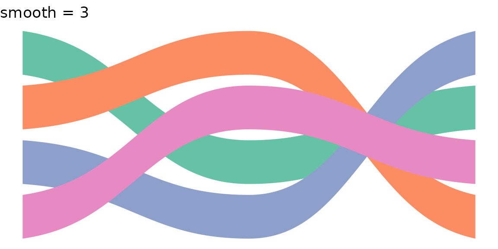
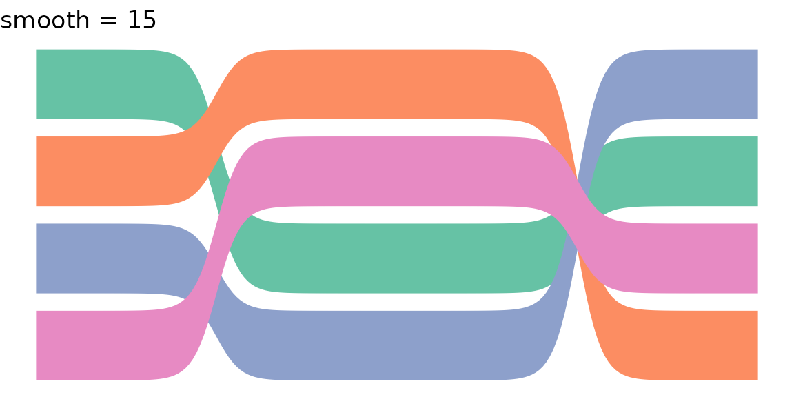
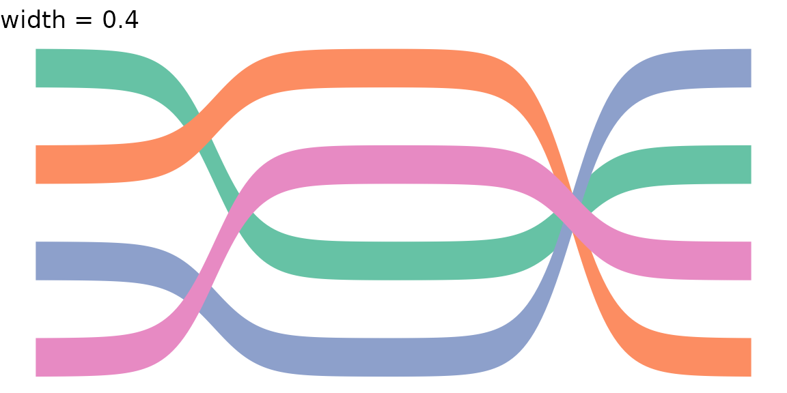
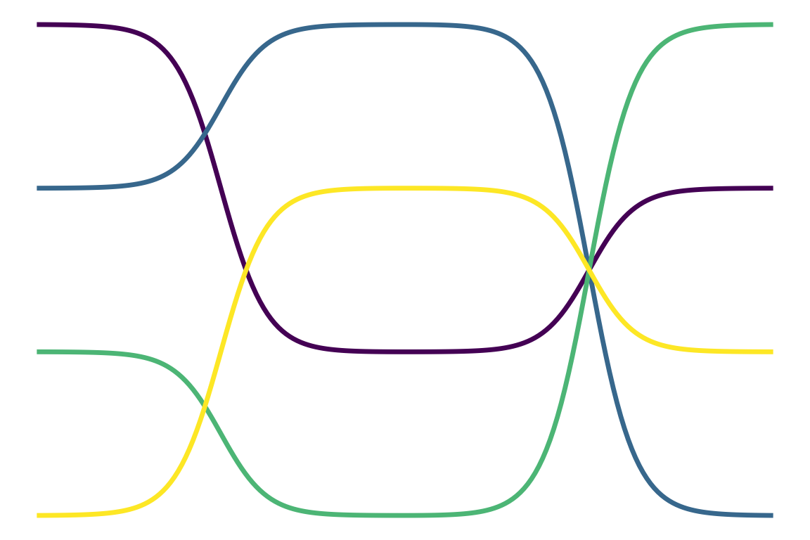
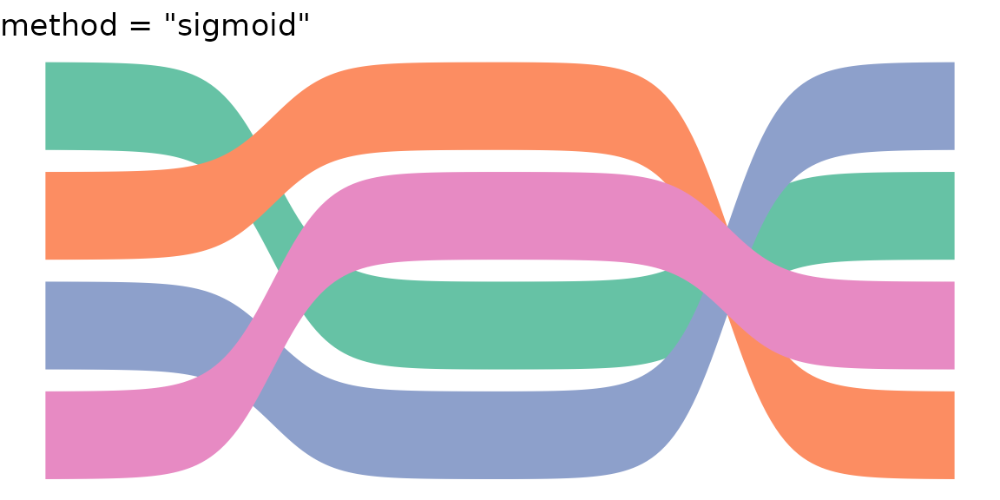
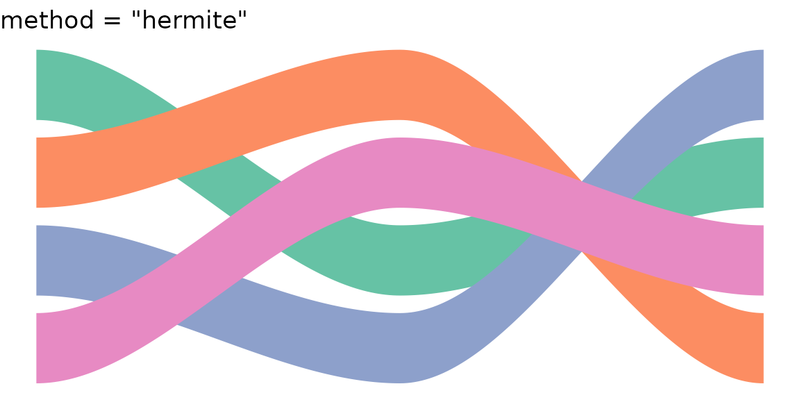
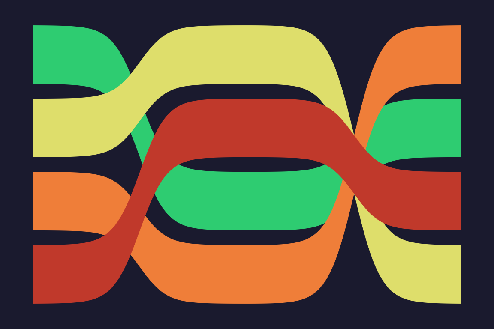
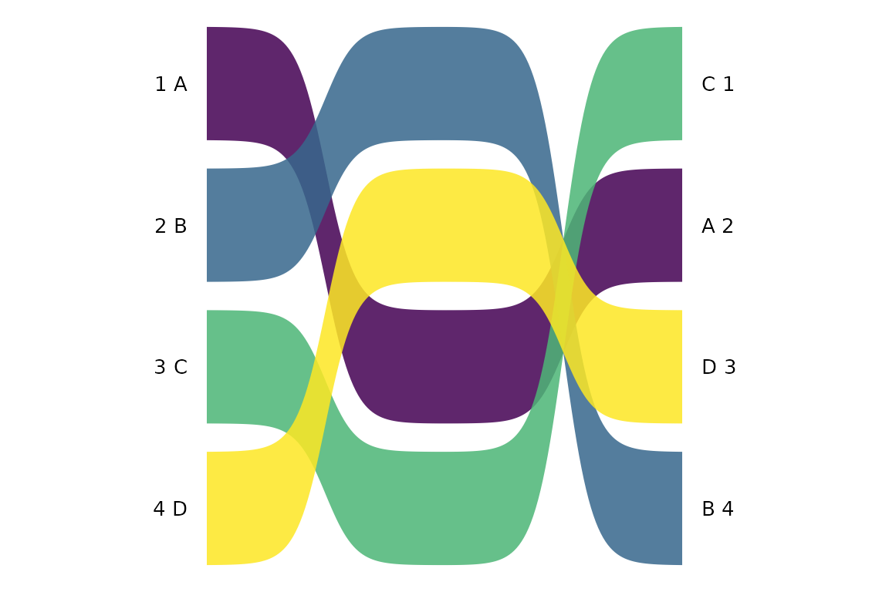
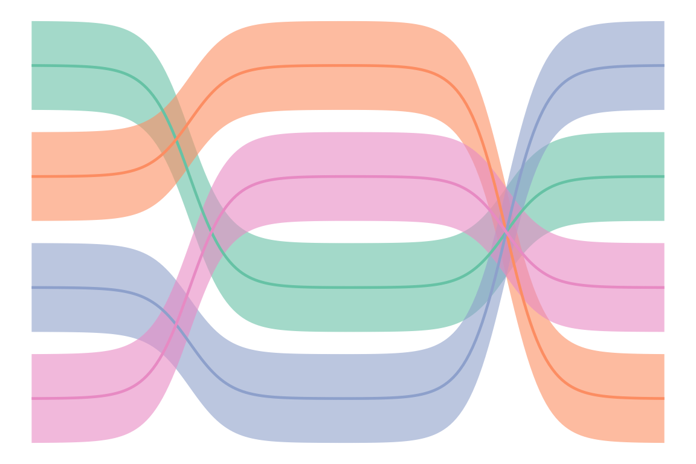

Data format
Both geom_bump_ribbon() and
geom_bump_line() expect a long-format data frame with
columns for position (x), rank (y), and a
grouping variable. Each group must have at least two x-values.
df <- data.frame(
x = rep(1:3, each = 4),
y = c(1,2,3,4, 3,1,4,2, 2,4,1,3),
group = rep(LETTERS[1:4], 3)
)
df
#> x y group
#> 1 1 1 A
#> 2 1 2 B
#> 3 1 3 C
#> 4 1 4 D
#> 5 2 3 A
#> 6 2 1 B
#> 7 2 4 C
#> 8 2 2 D
#> 9 3 2 A
#> 10 3 4 B
#> 11 3 1 C
#> 12 3 3 DFilled ribbons
geom_bump_ribbon() renders each group as a filled area
with smooth sigmoid curves between rank positions. The fill
aesthetic controls colour; mapping after_stat(avg_y)
produces gradient fills based on mean rank.
ggplot(df, aes(x, y, group = group, fill = after_stat(avg_y))) +
geom_bump_ribbon(alpha = 0.85) +
scale_fill_viridis_c(guide = "none") +
scale_y_reverse() +
theme_void()Parameters
The smooth parameter controls sigmoid steepness (higher
= sharper), width sets the ribbon thickness in data units,
and n controls interpolation density.
p_base <- ggplot(df, aes(x, y, group = group, fill = group)) +
scale_fill_brewer(palette = "Set2", guide = "none") +
scale_y_reverse() + theme_void()
p_base + geom_bump_ribbon(smooth = 3) + ggtitle("smooth = 3")
p_base + geom_bump_ribbon(smooth = 15) + ggtitle("smooth = 15")
p_base + geom_bump_ribbon(width = 0.4) + ggtitle("width = 0.4")
Lines
geom_bump_line() renders the same sigmoid curves as
stroked paths. Map colour instead of fill.
ggplot(df, aes(x, y, group = group, colour = after_stat(avg_y))) +
geom_bump_line(linewidth = 1.2) +
scale_colour_viridis_c(guide = "none") +
scale_y_reverse() +
theme_void()
Interpolation methods
Both geoms accept a method parameter. The default
"sigmoid" uses logistic S-curves with C1-continuous
derivative correction at segment joins. The alternative
"hermite" uses cubic Hermite interpolation via
stats::splinefunH() with zero slopes at knots.
ggplot(df, aes(x, y, group = group, fill = group)) +
geom_bump_ribbon(method = "sigmoid") +
scale_fill_brewer(palette = "Set2", guide = "none") +
scale_y_reverse() + ggtitle('method = "sigmoid"') + theme_void()
ggplot(df, aes(x, y, group = group, fill = group)) +
geom_bump_ribbon(method = "hermite") +
scale_fill_brewer(palette = "Set2", guide = "none") +
scale_y_reverse() + ggtitle('method = "hermite"') + theme_void()
Scale and theme
scale_fill_rank() provides a green-yellow-red gradient
with guide = "none", defaulting to auto-range from the
data. theme_bump() gives a dark background suited to rank
comparison infographics.
ggplot(df, aes(x, y, group = group, fill = after_stat(avg_y))) +
geom_bump_ribbon() +
scale_fill_rank() +
scale_y_reverse() +
theme_bump()
Labels
Add rank labels with standard ggplot2 layers. A typical pattern:
lbl_l <- df[df$x == 1, ]
lbl_r <- df[df$x == 3, ]
ggplot(df, aes(x, y, group = group, fill = after_stat(avg_y))) +
geom_bump_ribbon(alpha = 0.85) +
scale_fill_viridis_c(guide = "none") +
scale_y_reverse() +
scale_x_continuous(limits = c(0.3, 3.7)) +
geom_text(data = lbl_l, aes(x = 0.92, y = y, label = paste(y, group)),
inherit.aes = FALSE, hjust = 1, size = 3.5) +
geom_text(data = lbl_r, aes(x = 3.08, y = y, label = paste(group, y)),
inherit.aes = FALSE, hjust = 0, size = 3.5) +
theme_void()
Combining ribbons and lines
Overlay geom_bump_line() on top of
geom_bump_ribbon() for a bordered appearance:
ggplot(df, aes(x, y, group = group)) +
geom_bump_ribbon(aes(fill = group), alpha = 0.6) +
geom_bump_line(aes(colour = group), linewidth = 0.8) +
scale_fill_brewer(palette = "Set2", guide = "none") +
scale_colour_brewer(palette = "Set2", guide = "none") +
scale_y_reverse() +
theme_void()
Computed variables
StatBumpRibbon computes avg_y (group mean
rank, inverse-transformed for scale_y_reverse()
compatibility), ymin, and ymax.
StatBumpLine computes avg_y only.
group_data <- data.frame(x = 1:3, y = c(1, 5, 2))
out <- StatBumpRibbon$compute_group(group_data, NULL, smooth = 8,
n = 50, width = 0.8)
head(out)
#> x y ymin ymax avg_y
#> 1 1.000000 1.000000 0.6000000 1.400000 2.666667
#> 2 1.020408 1.000527 0.6005268 1.400527 2.666667
#> 3 1.040816 1.001270 0.6012703 1.401270 2.666667
#> 4 1.061224 1.002306 0.6023063 1.402306 2.666667
#> 5 1.081633 1.003740 0.6037402 1.403740 2.666667
#> 6 1.102041 1.005718 0.6057181 1.405718 2.666667